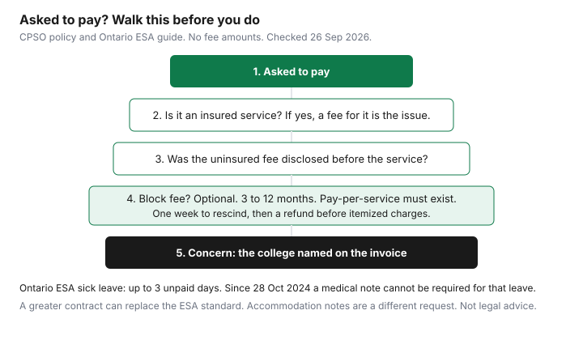

Healthcare · Canada
Uninsured Medical Fees in Canada: Sick Notes, Forms, Block Fees, and When You Can Say No
A clinic can ask you to pay for work the provincial plan does not insure. A sick note, a form, a copy of a chart, a prescription renewed by phone, and a missed appointment are the examples the College of Physicians and Surgeons of Ontario uses or regulates. The college also says the fee has to be reasonable, disclosed before the service except in an emergency, and, if it is a block fee, optional. This page is the patient-side reading of those rules, with Ontario in detail and links to other colleges. It does not print a dollar fee. It is education, not legal advice. The college, not this page, decides a complaint.
Key takeaways
- Uninsured services are services OHIP does not pay. The college’s examples include a prescription refill by phone and a copy or transfer of the record. A fee for an insured service itself is a different problem.
- For Employment Standards Act sick leave in Ontario, an employer cannot require a certificate from a physician, registered nurse, or psychologist. That rule has been in place since 28 October 2024. It covers the ESA leave: up to three unpaid days a calendar year, after two consecutive weeks of employment. A richer contract can replace the ESA standard. A note for accommodation or return to work is outside that ban.
- A block fee is optional, lasts at least three months and at most 12 months, and must be offered in writing beside pay-per-service. Refusing it cannot be used to refuse care, to slow care, or to drop you as a patient. You have a week to change your mind and get the block fee back.
- Missed or cancelled appointments can be billed if you had less than 24 hours’ notice, or on a written psychotherapy agreement. The fee still has to be reasonable, and the physician has to consider your ability to pay, including a first or isolated miss.
- Ask for the fee before the form is filled. If the physician charges more than the Ontario Medical Association guide, the college says you must be told the excess. Complaints about an Ontario physician go to the college. Other provinces: use the college named on the invoice.
What OHIP and other provincial plans don't cover (notes, forms, missed appointments, some virtual care)
OHIP pays insured services for an insured person, as the Health Insurance Act and the Schedule of Benefits define them. The college’s policy defines an uninsured service as a service the physician provides that OHIP does not fund. The examples in the definition are a prescription refill over the phone, and a copy or transfer of medical records. The definition also covers services to a person who is not insured under OHIP. A note for an employer, a form for a camp or an insurer, and a missed visit are in the same family of charges when they are not in the schedule. Some virtual care is uninsured and some is insured. The difference is whether that visit is an insured service under the schedule, not whether it happened on a screen. Ask before the visit starts. If the office cannot say, do not assume the call is free, and do not assume it is cash.
Other provinces insure a different list. This page does not copy each schedule. The pattern to carry across the country is the question, not a national price: is this visit insured by my provincial plan, and if it is not, what is the fee, disclosed before you receive the service? A travel-insurance form is a third-party form. Whether the medical exam under it is insured is a provincial question. Out-of-province care itself is the out-of-province guide, not a note fee.
Ontario: employers can't require a sick note for ESA sick days (verify current rules)
Ontario’s Employment Standards Act guide, updated 5 February 2026, says that since 28 October 2024 an employer cannot require a certificate from a qualified health practitioner as proof of ESA sick leave. A qualified health practitioner, in that guide, is a person qualified to practise as a physician, a registered nurse, or a psychologist under the laws of the place where the care is given. The leave itself is up to three unpaid, job-protected days each calendar year because of a personal illness, injury, or medical emergency, once you have worked for that employer for at least two consecutive weeks. The three days are not prorated if you start mid-year. They do not carry into the next year. Part of a day can be counted by the employer as a full day of leave, but you are still paid for the hours you worked. Notice can be oral. The employer may still ask for evidence that is reasonable in the circumstances. The medical note is what the ban removes, for this leave only.
The ban is not every medical note an employer will ever ask for. The guide says it applies to proof that you are entitled to ESA sick leave. A note to accommodate a disability, or to meet a return-to-work obligation, is outside that ban. The guide also says a contract, including a collective agreement, that provides a greater right or benefit than the ESA sick-leave standard replaces the standard. In that case the ESA ban on notes does not apply, and the contract does. Whether a contract is actually greater is a facts question. A contract with one paid sick day and no other job-protected illness leave is the guide’s example of a contract that is not greater, so the three ESA days, and the note ban, still apply, and the paid day counts against both. If you take the leave under a contract that is only “something similar,” the guide says you are also using ESA sick leave.
Long-term illness leave is a different leave. Ontario’s recent-changes page says that since 19 June 2025, an employee with at least 13 consecutive weeks of employment can take unpaid leave when a serious medical condition keeps them from working and a qualified health practitioner issues a certificate that states the condition and the period. The maximum is 27 weeks in a 52-week period. That certificate is part of the leave. It is not the sick-note ban. Do not hand an employer a long-term-illness certificate for a three-day ESA absence, and do not refuse a certificate that the long-term leave actually requires. If the employer demands a note for the three-day leave and you are covered by the ESA standard, you can point at the guide. If you are punished for taking the leave, the rights during the leave are the same family of protections as pregnancy and parental leave, as the sick-leave chapter describes them. Enforcement is the Ministry of Labour, not the physician’s college. The college is about the fee. The ministry is about the employer’s demand.
Block fees vs per-item fees: CPSO expectations and your right to choose
A block fee, in the college policy, is a fee for one or more uninsured services from a set list, during a set period. When you pay it, you do not know how many of those services you will use. It is optional. The period must be at least three months and at most 12 months. It cannot be a way to cover overhead for insured services. If a block fee is offered, pay-per-service must be offered too. Your choice cannot affect access. The physician must not require the block fee before you can get care, must not see you faster because you paid it, and must not fire you or refuse you as a patient because you declined it.
The offer has to be in writing. The writing has to say the fee is optional, that your choice will not affect access, which services are included, what each service costs if you pay as you go, examples of what is not included, and which fees are merely reduced if you join the block. It cannot use language that suggests care will be worse if you refuse. It has to point you to the college’s patient information sheet. Your questions have to be answered, and if you choose the block fee the confirmation is kept in the chart. You may rescind within a week of the decision. If you do, the physician must refund the block fee before charging you for uninsured services already provided. If the relationship ends later, the physician is advised to consider a partial refund for time and services remaining. That “advised” is discretion. The week-long rescission is a must.
Fees, including block fees and missed-visit fees, must be reasonable. The policy says the fee for a single service has to fit the service and the physician’s professional costs, giving consideration to the Ontario Medical Association’s Physicians Guide to Uninsured Services and any specialty-association schedule. The block amount has to be reasonable for the services and the months it covers. If the physician charges more than the association guide, you must be told that, and told the excess, before the service. The public association pages opened for this draft describe a suggested-fee area for physicians. They did not display a patient price list, so this article does not invent the guide’s numbers. Ask the office to show you the guide amount and the amount you are being charged. Ability to pay has to be considered, for a single fee, a block fee, a missed visit, and an outstanding balance. A first or isolated missed visit, or circumstances that got in the way, are the examples the policy gives for an exception.
Transfers of records, prescription renewal fees and driver's medicals
A copy or transfer of the record is the college’s own example of an uninsured service. You can be charged. You should be told the fee before the copies are made. An itemized invoice is advised always, and required if you ask. A transfer that is delayed until you pay a fee you were never told about is the disclosure rule, not a new rule. Ask for the fee, the format, and the date the receiving clinic will have the file.
A prescription renewed by phone is the other example in the definition. A renewal that happens inside an insured visit may be part of that visit. A renewal that is only a phone call, with no insured service, is the uninsured example. Ask which one you are booking. A fee that appears on a refill you thought was part of last month’s visit is a disclosure question: were you told before the call was returned?
A driver’s medical is not given a price, and it is not labelled in the college definition’s short list of examples. Treat it as a third-party examination until the office confirms it is an insured service. Truck, taxi, and senior licence forms are often requested by the Ministry of Transportation, not by OHIP. Ask, before the appointment, whether OHIP pays that form, what the uninsured fee is if it does not, and whether a block fee you already joined includes it. If the office cannot answer, you do not have the disclosure the policy requires for an uninsured service. The same question applies to insurance forms and camp forms. None of those amounts is printed here.
How to ask for a fee schedule in advance
Ask before the work, in a sentence you can keep. “Is this visit insured by OHIP? If it is not, what is the fee, and is it in the block fee I was offered? If you charge more than the Ontario Medical Association guide, what is the guide amount and what is the excess?” The policy says a posted list in the waiting room supports education and is not a substitute for telling you the fee for the service you are about to receive. A poster you did not see is not disclosure. Direct information is. You can also ask for the college’s patient information sheet on uninsured services and block fees. The sheet says the block fee is like a flat amount for a set of services for a set time, that it cannot be shorter than three months or longer than a year, and that you should think about whether you have used those services before.
Keep the written offer, the receipt, and any email that states the fee. If you paid a block fee and change your mind inside a week, ask for the refund in writing and keep the reply. If you are comparing a block fee with pay-per-service, list the uninsured items you actually used last year. A block fee that costs more than those items is the wrong buy for you. A block fee that costs less can still be the wrong buy if it excludes the one form you need. The policy tells physicians to invite that comparison. You are allowed to make it.
A health spending account or a taxable medical expense may reimburse some of what you paid. The account rules are the employer-benefits guide. The credit rules are the tax-credits guide. A form fee is not automatically an eligible medical expense. Look it up before you claim it. An individual health plan rarely exists to pay for sick notes. The gap guide is about dental and drug gaps, not about a $0 note.
Other provinces' rules (verify at draft)
Each province’s college sets expectations for its own physicians. The Ontario policy does not govern a clinic in another province. Use the college that licensed the physician. These sites responded when they were opened on 26 Sep 2026: the College of Physicians and Surgeons of British Columbia, the College of Physicians and Surgeons of Alberta, the Collège des médecins du Québec, the College of Physicians and Surgeons of Manitoba, the College of Physicians and Surgeons of Nova Scotia, the College of Physicians and Surgeons of New Brunswick, the College of Physicians and Surgeons of Prince Edward Island, and the College of Physicians and Surgeons of Newfoundland and Labrador. Saskatchewan and the territories were not given a working public link in this draft. Use the college named on your invoice, and read that college’s uninsured-services or billing standard before you assume Ontario’s three-to-twelve-month block-fee rule applies.
Employer sick-note bans are also provincial. Ontario’s rule is the one verified above. Do not tell an employer in another province that the Ontario guide binds them. Look up that province’s employment-standards page for sick leave and medical certificates. The fee question and the employer-demand question remain separate everywhere: the college hears the fee, and the employment ministry hears the demand for a note the statute forbids.
| Service | Insured? | Typical approach | Rule source |
|---|---|---|---|
| Sick note for ESA sick leave | The note is not an OHIP benefit the employer can demand for this leave. | Employer cannot require it for ESA sick leave since 28 October 2024. A greater contract can replace that standard. A physician may still charge if someone asks for a note the statute does not require. | Ontario ESA guide, sick leave, updated 5 February 2026. CPSO policy for any fee. |
| Forms for insurers, camps, employers | Uninsured when they are not in the OHIP schedule. | Per item, or inside an optional block fee. Fee disclosed before the work. Excess over the OMA guide disclosed. | CPSO, Uninsured Services: Billing and Block Fees. |
| Missed or late-cancelled appointment | Not an insured service. | Permitted with less than 24 hours’ notice, or a written psychotherapy agreement. Must be reasonable. Ability to pay, and a first miss, must be considered. | CPSO policy, missed or cancelled appointments. |
| Copy or transfer of records | Uninsured. It is a stated example. | Per item. Tell the patient the fee first. Invoice on request. | CPSO definition of uninsured services, and the invoice rule. |
| Prescription renewal by phone | Uninsured when it is not part of an insured visit. It is a stated example. | Per item or block fee. Ask which one the call is. | CPSO definition. |
| Driver’s medical | Not confirmed as insured on the pages opened. Ask. | Treat as uninsured until the office says otherwise. Get the fee before the appointment. No amount is published here. | CPSO disclosure rule. The form’s payer is the question to ask the office. |

Sources & date stamps
- College of Physicians and Surgeons of Ontario, Uninsured Services: Billing and Block Fees. Definitions, reasonable fees, disclosure, 24-hour missed-visit rule, block fee of 3 to 12 months, one-week rescission, OMA guide comparison. Opened 26 Sep 2026.
- CPSO patient information page on the same policy. Block fee described as optional, with pay-per-service beside it. Opened 26 Sep 2026.
- Ontario, Your guide to the Employment Standards Act, Sick leave, updated 5 February 2026. Three unpaid days. Note ban since 28 October 2024. Greater-benefit contracts.
- Ontario, Recent changes to ESA rules. Long-term illness leave from 19 June 2025, up to 27 weeks, certificate required, 13 consecutive weeks of employment.
- Ontario Medical Association public pages point physicians to suggested fees for uninsured services. No patient dollar list was opened. None is repeated.
- College homepages for British Columbia, Alberta, Quebec, Manitoba, Nova Scotia, New Brunswick, Prince Edward Island, and Newfoundland and Labrador, opened 26 Sep 2026. Saskatchewan returned no usable public page in this draft.
Frequently asked questions
Can my doctor charge for a sick note in Ontario?
A physician can charge for an uninsured service, and a note is uninsured when OHIP does not pay it. The fee has to be reasonable and disclosed before the service, unless it was an emergency where disclosure was impossible. If you are offered a block fee, you can refuse it and pay for each service instead. No official page opened for this guide published a dollar amount for a sick note.
Can my employer require a sick note?
For Employment Standards Act sick leave, no. Since 28 October 2024 an Ontario employer cannot require a certificate from a physician, registered nurse, or psychologist to prove that leave. The leave is up to three unpaid days a calendar year after two consecutive weeks of work. A contract that is a greater right can replace that standard, and a note for accommodation or return to work is a different request, while long-term illness leave, since 19 June 2025, does require a certificate.
What is a block fee and do I have to pay it?
A block fee is a flat amount for a set of uninsured services over at least three months and at most 12 months. You do not have to pay it. The physician must also offer pay-per-service, and refusing the block fee cannot affect your care or your place in the practice. You have a week to change your mind, and the block fee is refunded before you are billed item by item.
Can I be charged for missing an appointment?
Yes, if you miss it or cancel with less than 24 hours’ notice, or if a psychotherapy practice follows a reasonable written agreement. The fee still has to be reasonable, and the physician must consider your ability to pay. A first or isolated miss, and circumstances that got in the way, are the policy’s examples of an exception. Ask for the missed-visit rule before you need it.
Where can I complain about a fee?
In Ontario, the College of Physicians and Surgeons of Ontario handles physician conduct, including uninsured billing. Send the written offer and the receipt, and use the college’s patient sheet. An employer who demands a note for ESA sick leave is a Ministry of Labour question, not a college question. In another province, use the college that licensed the physician.